![\(\dot\rho=-\frac i\hbar[H,\rho]+\sum_k\gamma_k\left(L_k\rho L_k^\dagger-\tfrac12\{L_k^\dagger L_k,\rho\}\right)\)](m/08a0931f2661ebe6e011c5e0d3bf1067981ab874.svg) ; for a damped cavity
; for a damped cavity  , for a decaying atom
, for a decaying atom  , giving the optical Bloch equations with
, giving the optical Bloch equations with Model
System + bath,
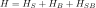
. Assumptions: weak coupling (Born: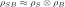
), bath correlation time short (Markov), and secular (RWA) approximation. The result is the most general generator of completely positive, trace-preserving semigroups (Lindblad–Gorini–Kossakowski–Sudarshan) (Lindblad 1976; Gorini et al. 1976).Damped cavity
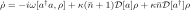
, with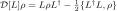
. Then and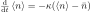
: field amplitude decays at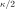
, energy at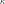
towards thermal equilibrium.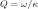
.Optical Bloch equations
Two-level atom driven at Rabi frequency
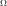
, detuning ,
, 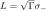
. With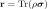
: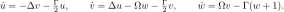
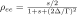
, saturation parameter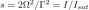
: power broadening and saturation of absorption.Worked example
Sodium D2,
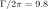
MHz,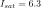
mW/cm . At
. At 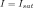
, resonance: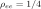
; scattered photon rate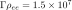
s , the radiation-pressure force behind laser cooling (
, the radiation-pressure force behind laser cooling (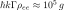
for Na).Engineering applications
Qubit
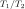
modelling and error budgets, laser rate equations and linewidth, saturable absorbers for mode-locking, optical pumping in atomic clocks and magnetometers, quantum-trajectory simulation of photon counting.Pitfall
Phenomenological damping added to the Schrödinger equation (
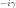
in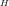
) does not conserve trace; the jump terms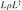
are needed to put the probability back into the ground state.